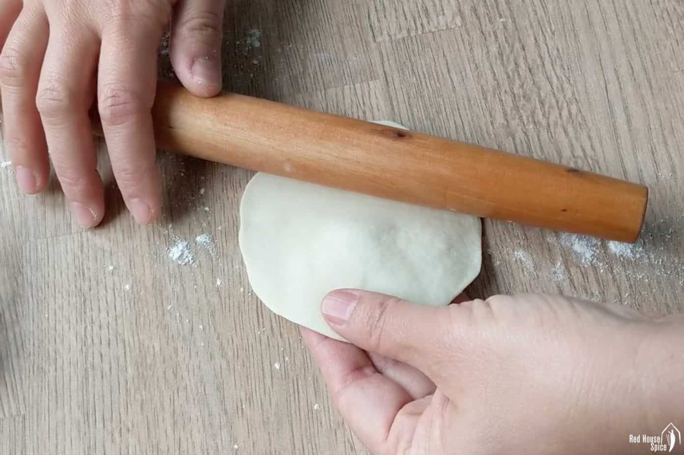

Mac & Cheese
Macaroni and cheese, commonly known as mac & cheese, is a comfort food staple that has captured the hearts of people all over the world. Originating from Europe and popularized in the United States, this dish consists of elbow macaroni pasta smothered in a creamy cheese sauce.
The simplicity of its ingredients—pasta, cheese, and often a touch of butter or milk—belies a rich, complex flavor that has made it a favorite for both quick weeknight dinners and festive holiday gatherings.

Mac & Cheese ingredients (pasta)
Processing the ingredients

Mac & Cheese grilled
Recipe Ingredients
- Macaroni
- Butter and flours
- Milk
- Cheese
- Seasonings
- Bread crumbs
Japanese Chicken Curry
Unlike Indian or Thai curry, Japanese curry is more savory than spicy. It’s an exemplary comfort food and one of the most-loved home-cooked dishes in Japan.

Curry sauce is the key to make Japanese curry

Raw chicken breast is needed to make curry

White rice is the best companion with curry
Recipe Ingredients
- skinless, boneless chicken breast
- 1 tablespoon olive oil, water
- 1 pinch salt and ground black pepper
- 1 can peas, 5 potatoes
- 1 onion, 2 carrot, 1 package mushrooms
- 2 cups jasmine rice
Chinese Dumplings

Chinese dumplings are stuffed parcels made of unleavened dough and savory fillings consisting of minced ingredients like meat, egg, tofu, or vegetables. They can be boiled, pan-fried or steamed.

Chinese dumplings ready for eating!

Chinese dumplings ready for stewing

How to make dumplings
Ingredients
- flour
- water
- pork
- cabbage